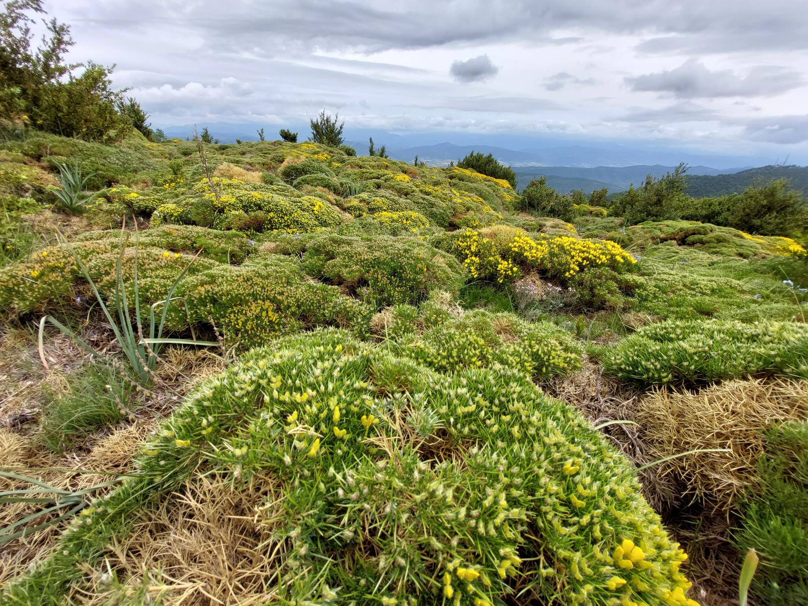
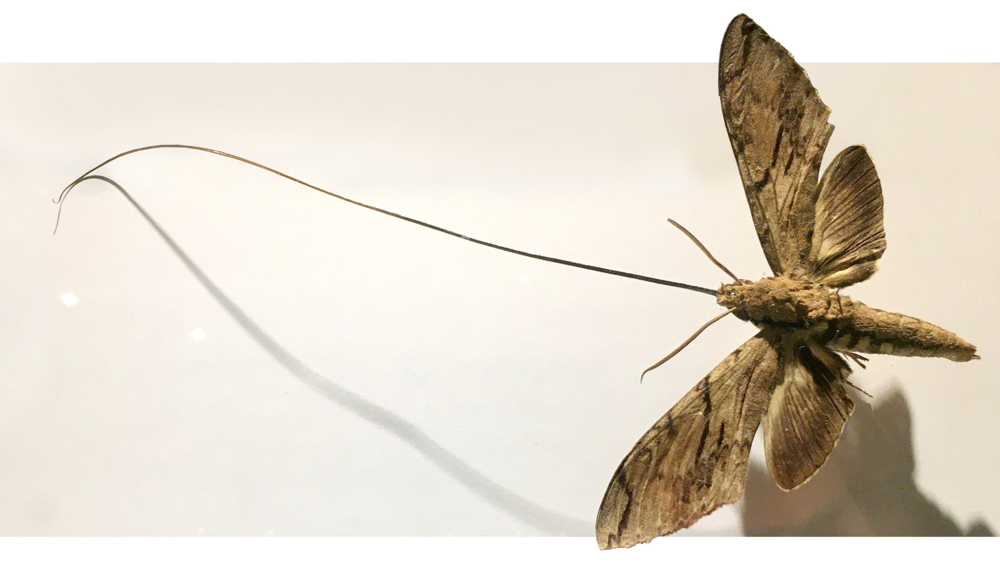
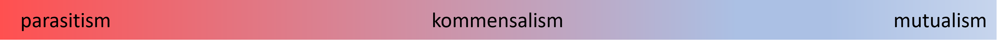

Positiivsed interaktsioonid
Nimetagem positiivseteks liikidevahelisteks interaktsioonideks selliseid, kus üks liik saab teise liigi olemasolust kasu ning teisel liigil on, kui mitte ka hea, siis vähemalt ükskõik. Nagu ökoloogias tavaks, kätkevad needsamad positiivsed interaktsioonid palju erinevaid (ülemineku)vorme.
Sellegipoolest võime proovida positiivseid interaktsioone lahterdada kas:
Kohasuse netokasu poolest ehk kuidas mõjutab interaktsioon liigi A ja B fitnessi:
Mutualism (+ / +) - mõlemad liigivad saavad netokasu ning nende mõlema kohasus kasvab.
Kommensalism (+ / 0) - kasu saab üks liik, kuid teisele liigile (nii positiivne kui negatiivne) mõju puudub
või hoopis (evolutsioonilise) mehhanismi poolest:
Fasilitatsioon ehk soodustamine sensu Callaway (2010) - ühe liigi (elupuhune) positiivne mõju teisele liigile. Fasilitatsiooni puhul peetakse positiivse mõju all silmas peamiselt elukeskkonna muutmist (meenutagem ka ökosüsteemi insenere). Aga mitte ainult..
Mutualism - kahesuunalise tugeva evolutsioonilise (retsiprookne koevolutsioon) taustaga liikidevaheline suhe, kus netokasu saab kumbki osapool ning mõlemale rakendub valikusurve interaktsiooni hoida.
Fasilitatsioon ehk soodustamine
NB! Ingliskeelses tähendusväljas (eriti taimkatteteaduseväliselt) mõistetakse terminit facilitation tihtipeale liikidevahelise positiivse interaktsioonina sensu lato.
Praeguse kursuse kontekstis käsitleme fasilitatsiooni sensu Callaway (2010). Fasilitatsioon on mittetroofiline (elupuhune) positiivne interaktsioon, kus üks liik soodustab läheduses elava liigi elumust, kasvu või paljunemist ise kahju kannatamata.
Wherever lack of precipitation prevents a continuous cover of vegetation in Southern California, the dependence of certain annuals upon the presence of specific shrubs becomes evident.
(Went, 1942)
Teisisõnu - erinevalt mutualismist on fasilitatsioon sageli ühesuunaline (\(+/0\)) või asümmeetriline suhe, kus soodustav (fasiliteeriv) liik ise ei pruugi kasusaajast otsest kasu saada (nt suur puu pakub varju, aga ei “vaja” varjus kasvavat rohttaime). Sealjuures ei tähenda fasilitatsiooni elupuhusus seda, et ei toimiks evolutsioonilised protsessid (st valik) - kasusaajal on kindlasti mõistlik evolutsioneeruda kasu paremini saama!
Toimemehhanismid
Fasilitatsioon toimib peamiselt kahel viisil:
- Otsene fasilitatsioon toimub siis, kui fasiliteeriv (ehk soodustav) liik moduleerib omaenda füüsikalis-keemilist keskkonda nii, et sellest saavad kasu teised liigid. Üks liik leevendab teiste liikide abiootilist stressi.
- Kaudne fasilitatsioon leiab aset, kui ühe liigi olemasolu koosluses vähendab teistele liikidele avalduvat biootilist survet, olgu see surve siis näiteks röövlus või konkurents (näiteks kas või sihitu konkurentsiahel ehk kivi-paber-käärid-süsteem).
Põetajataimed (nurse plants)
Klassikaline näide fasilitatsioonist on põetajataimed. Põetajataim on koosluses “kanda kinnitanud” taim (tavaliselt puitunud taim), kes loob enda võras ja selle all soodsa mikrokliima, võimaldades kasvukoha abiootiliste (või biootiliste!) tingimustega muidu hätta jäävatel teistel (taime-)liikidel püsima jääda.

Põetajataimede võivad pakkuda tervet hulka erinevaid hüvesid Filazzola and Lortie (2014) järgi:
Püüab tuule või veega levivaid seemneid
Varjupaik ja/või toiduallikas seemneid levitavatele loomadele
Tugistruktuur
Aitab kaasa huumusetekkele
Soodustab mulla mikroorganisme
Suurendab mullaniiskust, toitainete- ja hapnikusisaldust
Reguleerib mullareaktsiooni
Reguleerib UV kiirgust ja temperatuuri
Vari tuule, vihma ja lume eest
Kaitse herbivooride vastu
Soodustab tolmeldamist
Muudab assotsieerunud taimede ruumilist jaotust
Soodustab fülogeneetiliselt kaugete liikide kooseksisteerimist
…
Fasilitatsiooni esinemissagedus ja olulisus ökosüsteemis sõltub sellest, kui soodsad on keskkonnatingimused. Bertness and Callaway (1994) sõnastatud stressigradiendi hüpotees (Stress Gradient Hypothesis):
- Ebasoodsates tingimustes (kõrbed, soolakud, mäestikud) domineerib liikidevahelistes suhetes fasilitatsioon, sest abiootiline stress on peamine limiteeriv faktor. Liigid vajavad üksteise abi ellujäämiseks.
- Soodsates tingimustes (parasvöötme viljakad niidud, vihmametsad) domineerib konkurents, sest ressursse on ellujäämiseks piisavalt ja peamiseks piiravaks faktoriks on ruum ja valgus, mille pärast tuleb võidelda.
Ontogeneetiline nihe
Eelnev pildinäide Püreneedes toimuvast fasilitatsioonist liblikõielise puhma poolt on klassikaline ka teises mõttes. Liblikõieline erizón pakub seemikutele nii mehaanilist kaitset Püreneede suhteliselt intensiivse karjatamissurve eest (taim on tõesti õudust tekitav!), kaitset ekstreemsete temperatuuride eest ja rikastab liblikõielisena vaest mäestikumulda veel lämmastikugagi.
Aga kui vaadata pikemat suktsessioonilist pilti, siis:
Erizón koloniseerib näiteks põlenud kasvukoha
Männiseeme langeb kurja põõsa alla, idaneb ja kasvab õndsas rahus
Mänd kasvab põõsast kõrgemaks
Mänd varjutab põõsa ja põetajataim lõpuks sureb
Tekib männimets
Mis juhtus? Fasilitatsioon (+ / 0) suhe transformeerus soodustatud taime ontogeneesi käigus tugevaks konkurentsiks (- / -), kusjuures tubli ja abivalmis leetpõõsas tõrjutakse konkurentsi käigus üldse välja!
Mutualism
Erinevalt niisama fakultatiivsetest suhetest on mutualism kooselu, mis on mõlemale osapoolele kasulik. Nagu juba enne mainitud, on toimub mutualismi puhul valikusurve mõlema osaleva liigi suhtes. Seda nimetatakse reitsiprookseks koevolutsiooniks ehk olukorraks, kus mõlemale liigile rakenduv valikusurve soosib mutualistliku suhte hoidmist.
Või siiski?
Nimelt on ka mutualismi puhul võimalik interaktsiooni paigutada mitmele eri gradiendile. Mutualismi saab jagada:
Obligaatne või fakultatiivne:
Obligaatse mutualismi puhul sõltub osalevate liikide ellujäämine täielikult teineteisest, sealjuures võib obligaatsus olla sümmeetriline (mõlema liigi ellujäämine on tihedalt seotud mutualistliku partneri olemasoluga) või asümmeetriline (eluliselt sõltub mutualistlikust partnerist ainult üks osapooltest).
Sümmeetrilise obligaatse mutualismi ehk tuntuim näide on viigipuud ja neid tolmeldavad herilased- viigipuu õisik on täiesti kinnine ja tema vilju ei tolmelda ükski muu ussi- ega püssirohi peale ülispetsialiseerunud herilase, kes ronib õisiku sisse munema ja kelle vastsed saavad vastutasuks kaitse ja toidu.
Asümmeetrilise obligaatse mutualismi näiteks võiks tuua meriroosi ja meriroosahvena (clownfish). Meriroosahven siseneb ilma meriroosi kaitsvate kombitsate (millega kala ennast aegapidi harjutab) varju otsimata kiiresti toiduahela ülemistesse lülidesse, samas kui meriroos, keda kala küll natukene parasiitide ja meriroosi söövate teiste kalade eest kaitseb, saab elatud ka ilma meriroosahvenata.

Fakultatiivse mutualismi puhul jäävad interaktsiooni potentsiaalsed osapooled ellu ka iseseisvalt - iseasi, mis elu see ka on. Selle näitena võiks tuua näiteks lehetäid ja sipelgad, kelle suhe on selgelt mutualistlik - sipelgad saavad kvaliteetset süsinikku ja lehetäid kaitset, aga kumbki osapool saab elatud ka ilma teiseta.
Spetsialiseerunud või mittespetsialiseerunud:
Spetsialiseerunud mutualismi puhul on kas üks või mõlemad osalevad liigid partnerile kitsalt spetsialiseerunud. Klassikaline näide on pikakannuseline komeetkäpp Angraecum sesquipedale ja temaga ülispetsiifiliselit koevolutsioneerunud, 30 cm pika londiga suru Xanthopan morganii.
, via Wikimedia Commons">Mittespetsialiseerunud mutualismi puhul säärast spetsialiseerumist ei toimu. Selle näiteks on taimede ja arbuskulaarmükoriissete (AM) seente vaheline interaktsioon. Üks taimeliik (või isegi isend) võib mutualistliku suhte moodustada mitme erineva AM seeneliigiga ning üks AM seene liik (või isend) võib olla samaaegselt seotud mitme eri taimeliigiga.
Olgu siinkohal mainitud, et mida aeg edasi, seda rohkem peetakse ökoloogiateaduses spetsialiseerumist mitte binaarseks (on või ei ole) tunnuseks, vaid spetsialiseerumine on asukoht liikidevaheliste interaktsioonide toimumise tõenäosuslikul gradiendil.
Vahetatava ressursi järgi:
Toit - troofiline mutualism- suhe, kus partnerid osalevad (komplementaarselt) toitainete ja süsivesikute hankimises ja/või tootmises
Kaitse - kaitsemutualism - suhe, kus üks liik vastutasuks toidu ja/või varjupaiga eest kaitseb teist liiki tolle vaenlaste vastu
Transport - levimismutualism - suhe, kus üks liik aitab teisel liigil levida, saades ise vastutasuks toitu
Pange tähele, et üldiselt on ühe osapoole saadav tulu pea alati seotud toiduga, erinevus seisneb selles, mida saab vastu teine interaktsiooni osapool.
Ekspluatatiivne suhe
Lihtne on kõikide nende näidete peale mõeldes arvata, et mutualism on loomult heatahtlik suhe - tee head ja head tehakse sulle. Tegelikult on võiks mutualismi siiski vaadelda kui retsiprookset ekspluatatsiooni ehk vastastikust ärakasutamist, kus kumbki partner saab netokasumi.
Mesilane ei tolmelda, ta käib söömas.

Netokasum sõltub sellest, mis hinnaga on kummalegi osapoolele tema poolt äraantav ressurss (näiteks fotosünteetiliselt fikseeritud süsinik), ning sellest, kui piirav on partneri poolt saadud ressurss (näiteks mullast hangitud fosfaat). Sestap ujuvad säärased interaktsioonid pidevalt gradiendil, mille teises otsas on parasitism.